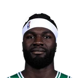

Now that Brown has moved to Philadelphia this summer, their friendship will have to coexist with their rivalry.
“I've dunked on everybody on the court. Jaylen Brown is the only one left,”

3 quotes from Neemias Queta about 2 other people around the NBA, newest first. Each one links to its original source.
Now that Brown has moved to Philadelphia this summer, their friendship will have to coexist with their rivalry.
“I've dunked on everybody on the court. Jaylen Brown is the only one left,”
“I think you feel for him. Obviously, it wasn’t easy for him as well. But at the end of the day, it’s part of the business. You know what’s happening. You know it can happen at any moment. But Jaylen’s a guy that you can’t replace in the city. Really, really hard to replace on the court as well. He did so much for Boston in general, and he will definitely be missed.”
Bobby Krivitsky: Neemias Queta on Joe Mazzulla continuing to challenge and push him on a career night where he had 27 points, 17 rebounds, and 3 blocks:
“That's huge. Like, it’s easy when you have a night like this to like, settle down…when Joe comes, keeps coming at you like that, you're only going to get better.”